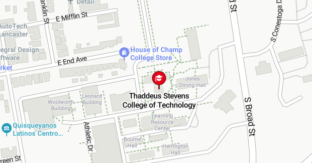

Thaddeus Stevens College of Technology is located in Lancaster, Pennsylvania, a vibrant city rich in history and culture. The campus is easily accessible, surrounded by urban amenities like shops and parks. With modern facilities and state-of-the-art technology, it offers an ideal environment for hands-on learning.

Address - 750 E King St, Lancaster, PA 17602